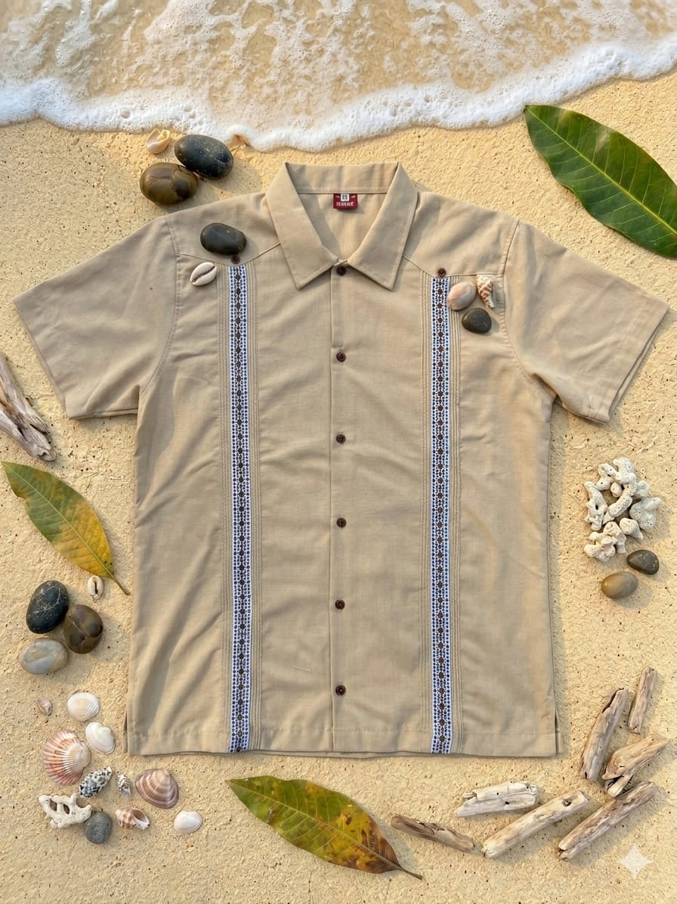

Cacomixtle no es solo una marca de ropa; es el puente entre dos mundos. Nacimos de la admiración por la maestría textil de Puebla y la sofisticación relajada de Los Cabos.
Nuestra misión es rescatar la guayabera tradicional y elevarla a una pieza de alta costura contemporánea, diseñada para el hombre que valora la autenticidad y el detalle artesanal en cada puntada.

"La elegancia es la única belleza que nunca desaparece."
Seleccionamos lino de la más alta calidad, garantizando prendas que perduran y mejoran con el tiempo.
Fibras naturales que respiran con tu piel, diseñadas para la frescura absoluta bajo el sol de Baja California.
Cada pieza apoya directamente a talleres familiares en Puebla, preservando técnicas ancestrales de costura.
Descubre por qué somos la elección de quienes buscan algo más que una prenda: un símbolo de México, cultura y comodidad.
Explorar la Colección